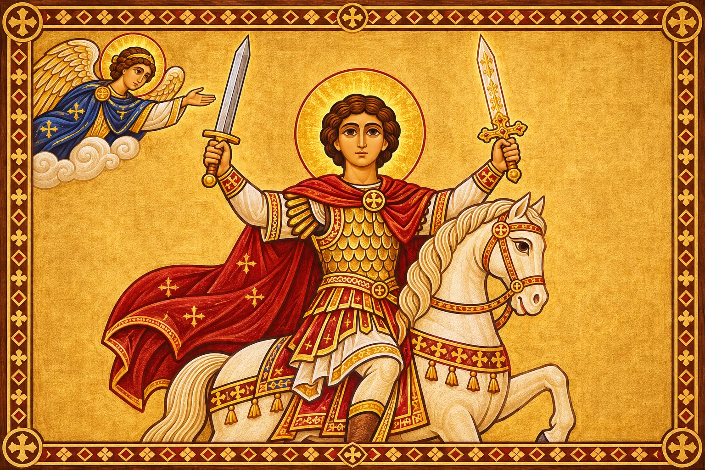

LESSON 05 · THE SAINT OF THE TWO SWORDS
Faithful with courage.
Meet St. Philopater Mercurius, known in Coptic tradition as Abu Sefein. Read his story, then find six moments and put them in order.
ST. PHILOPATER MERCURIUS · ABU SEFEIN
Remember God
Stand firm
Be faithful
FIND & ARRANGE
What happened next?
Tap the story cards in the order they happened. A wrong tap gives you a clue; you can try again.
0 of 6 moments placed
YOUR STORY PATH
STORY CARDS · TAP ONE
Why is he called Abu Sefein?
Choose an answer.
TAKE IT WITH YOU
Remember where strength comes from.
In the Coptic Synaxarium, the angel asked Mercurius to remember God. Mercurius held to his faith even when it cost him his rank and life.